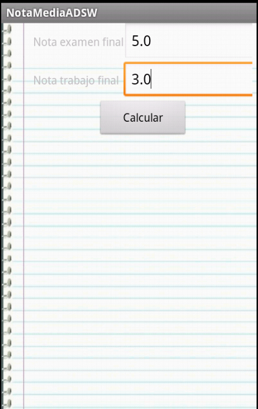

Examen 2012 — Final
Ejercicio 1
A. (1.5 puntos)
Se pide escribir un algoritmo de ordenación con la siguiente interfaz
int[] ordena(long[] datos)
datos: [8, 42, 46, 24, 29, 7]
indices: [1, 4, 5, 2, 3, 0]
- datos[0] se ordenaría en la posición 1
- datos[1] se ordenaría en la posición 4
- datos[2] se ordenaría en la posición 5
- etc.
NOTA: Si hubiera 2 datos de igual valor, da igual cual de ellos va antes o después. Elija lo que le sea más cómodo.
Mostrar solución
Una posible solución es:
public int[] sort(long[] datos) {
int[] indices = new int[datos.length];
Arrays.fill(indices, -1);
for (int i = 0; i < indices.length; i++) {
int iMenor = -1;
long menor = Long.MAX_VALUE;
for (int j = 0; j < datos.length; j++) {
if (indices[j] < 0 && datos[j] < menor) {
iMenor = j;
menor = datos[j];
}
}
indices[iMenor] = i;
}
return indices;
}
B. (1.5 puntos)
Estime la complejidad del algoritmo del punto anterior, contando el número de comparaciones entre datos (enteros long) que hay que hacer en el caso peor.
Mostrar solución
Hay 2 bucles, uno dentro del otro. El bucle exterior se hace \(N\) veces. En el bucle interior, la primera vez se hacen \(N-1\) comparaciones; la segunda vez, \(N-2\); la tercera \(N-3\), etc. En total \((N-1) + (N-2) + ... + 1 \leftarrow \mathcal{O}(N^2)\)
Ejercicio 2
A. (3 puntos)
Sea un puente con capacidad para un vehículo y dos accesos: norte y sur. En caso de que haya vehículos intentando entrar por los dos accesos, debe entrar un vehículo por el extremo en el que haya más esperando (si el número de vehículos esperando en cada extremo es el mismo, no es necesario imponer un orden). En el caso de que intente entrar una ambulancia, tendrá prioridad sobre el resto de vehículos. No es necesario considerar el caso en que dos ambulancias intenten acceder simultáneamente al puente. Se pide desarrollar una clase monitor GestorPuente que gestione el acceso al puente, según la especificación previa. Los métodos de esta clase no retornan valores. El esqueleto de la clase es el siguiente:
public class GestorPuente {
... void entrarNorte () { ...}
... void entrarSur () { ...}
... void entrarAmbulancia () { ...}
... void salirPuente(){...}
}
Mostrar solución
Una posible solución es:
package es.upm.dit.adsw.puenteTurnoEspera;
/**
* @author Alejandro Alonso
* Monitor que gestiona la entrada a un puente de coches
* por sus dos extremos (norte y sur). Dentro el puente sólo puede
* haber un coche. Si hay coches esperando en sus dos extremos, entra
* uno por el extremos con más coches esperando. Si intenta entrar una
* ambulancia, tendrá prioridad. No pueden intentar dos ambulancias
* simultaneamente.
*/
public class GestorPuente { // monitor
/**
* Indica si hay un coche dentro del puente
*/
private boolean hayCocheEnPuente = false;
/**
* Indica el número de coches que están esperando
* para entrar en el puente por el Norte
*/
private int nCochesNorte = 0;
/**
* Indica el número de coches que están esperando
* para entrar en el puente por el Sur
*/
private int nCochesSur = 0;
/**
Indica si hay una ambulancia esperando.
*/
private boolean hayAmbulancia = false;
/**
* Método que ejecutan los coches que quiere entrar por el norte.
* El coche entrará en el puente cuando esté vacío, no haya más
* coches esperando en el sur y no haya ambulancias.
*/
public synchronized void entrarNorte() throws InterruptedException {
nCochesNorte++;
!!while (hayCocheEnPuente || hayAmbulancia || nCochesNorte < nCochesSur)
wait();
hayCocheEnPuente = true;
nCochesNorte--;
}
/**
* Método que ejecutan los coches que quiere entrar por el sur.
* El coche entrará en el puente cuando esté vacío, no haya más
* coches esperando en el sur y no haya ambulancias.
*/
public synchronized void entrarSur() throws InterruptedException {
nCochesSur++;
while (hayCocheEnPuente || hayAmbulancia || nCochesSur < nCochesNorte)
wait();
hayCocheEnPuente = true;
nCochesSur--;
}
/**
* Método que ejecutan las ambulancias
*/
public synchronized void entrarAmbulancia() throws InterruptedException {
hayAmbulancia = true;
while (hayCocheEnPuente) wait();
hayCocheEnPuente = true;
hayAmbulancia = false;
}
/**
* Método que invoca un coche que está en el puente al salir de él.
*/
public synchronized void salirPuente() {
hayCocheEnPuente = false;
notifyAll();
}
}
Ejercicio 3
Tenemos una aplicación de Android que calcula la nota de ADSW como se muestra a continuación.
 |
|
|  |
Como hemos visto, la aplicación consta de dos pantallas, un formulario inicial (NotaMediaActivity) y una pantalla que muestra una foto y el resultado (ResultadoActivity). Ambas clases están en el paquete es.upm.dit.adsw.
El cálculo de la nota media se realiza de la siguiente forma:
- Sólo se hace media si ambas notas son mayores o iguales a 4.
- La nota es 0.6 * nota de de examen + 0.4 * nota de trabajo
A. (1 punto)
Complete el código del fichero de manifiesto del listado 1 para que la aplicación muestre la pantalla inicial (formulario) y pueda pasar a la segunda de resultado con la media.
B. (2 puntos)
Programe la actividad NotaMediaActivity. Debe tener en cuenta:
- Si el usuario no rellena un campo o introduce un valor no numérico, debe mostrar un mensaje indicándole que debe introducir valores numéricos (use un Toast).
- La actividad ResultadoActivity espera recibir una intención con dos parámetros extra:
- un primer parámetro de tipo boolean denominado “aprobado” (true si cumple umbrales y media > = 5; false en caso contrario)
- un segundo parámetro de tipo String denominado valor (contiene un mensaje indicando qué umbral no se ha superado si no se puede hacer la media, o bien el valor de la nota media).
- Los listados 2 y 3 le proporcionan información del layout de NotaMediaActivity y las cadenas string.xml de la aplicación.
Listado 1. Código de AndroidManifest.xml
<?xml version="1.0" encoding="utf-8"?>
<manifest xmlns:android="http://schemas.android.com/apk/res/android"
package="COMPLETAR POR EL ALUMMNO" <!-- COMPLETAR -->
android:versionCode="1"
android:versionName="1.0" >
<uses-sdk android:minSdkVersion="10" />
<application
android:icon="@drawable/ic_launcher"
android:label="@string/app_name"
>
<!-- COMPLETAR POR EL ALUMNO -->
</manifest>
Listado 2. Código de layout/ notamedia_final.xml
<?xml version="1.0" encoding="utf-8"?>
<TableLayout xmlns:android="http://schemas.android.com/apk/res/android"
android:layout_width="match_parent"
android:layout_height="match_parent"
android:background="@drawable/notebook"
android:paddingLeft="40dp"
android:paddingRight="5dp" >
<TableRow>
<TextView
android:layout_width="wrap_content"
android:layout_height="wrap_content"
android:text="@string/nota_examen" />
<EditText
android:id="@+id/editText_examen_final"
android:layout_width="wrap_content"
android:layout_height="wrap_content"
android:ems="10"
android:inputType="number|numberDecimal" >
<requestFocus />
</EditText>
</TableRow>
<TableRow>
<TextView
android:layout_width="wrap_content"
android:layout_height="wrap_content"
android:text="@string/nota_trabajo" />
<EditText
android:id="@+id/editText_trabajo_final"
android:layout_width="wrap_content"
android:layout_height="wrap_content"
android:ems="10"
android:inputType="number|numberDecimal" >
</EditText>
</TableRow>
<TableRow
android:gravity="center">
<Button
android:id="@+id/button_calcular"
android:layout_width="wrap_content"
android:layout_height="wrap_content"
android:text="@string/calcular" />
</TableRow>
</TableLayout>
Listado 3. Código de values/strings.xml
<?xml version="1.0" encoding="utf-8"?>
<resources>
<string name="app_name">NotaMediaADSW</string>
<string name="nota_trabajo">Nota trabajo final</string>
<string name="nota_examen">Nota examen final</string>
<string name="nota_media">Nota media</string>
<string name="calcular">Calcular</string>
<string name="error_numero">Los campos deben ser numéricos</string>
<string name="umbral_trabajo">No has superado el umbral de 4.0 en la práctica</string>
<string name="umbral_examen">No has superado el umbral de 4.0 en el examen</string>
<string name="enhorabuena">Enhorabuena, que pases un buen verano.</string>
<string name="julio">Hay otra oportunidad en julio. </string>
<string name="nota">La nota es </string>
<string name="problema_nota">Hay un problema para mostrar la nota</string>
</resources>
Mostrar solución
Una posible solución es:
<?xml version="1.0" encoding="utf-8"?>
<manifest xmlns:android="http://schemas.android.com/apk/res/android"
package="es.upm.dit.adsw"
android:versionCode="1"
android:versionName="1.0" >
<uses-sdk android:minSdkVersion="10" />
<application
android:icon="@drawable/ic_launcher"
android:label="@string/app_name"
>
<activity
android:name=".NotaMediaActivity"
android:label="@string/app_name" >
<intent-filter>
<action android:name="android.intent.action.MAIN" />
<category android:name="android.intent.category.LAUNCHER" />
</intent-filter>
</activity>
<activity
android:name=".ResultadoActivity"
android:label="@string/app_name" />
</application>
</manifest>
public class NotaMediaActivity extends Activity {
public static final String APROBADO = "nota";
public static final String VALOR = "valor";
private static final String TAG = NotaMediaActivity.class.getSimpleName();
private EditText editNotaFinal;
private EditText editTrabajoFinal;
private Button buttonGuardar;
@Override
public void onCreate(Bundle savedInstanceState) {
Log.d(TAG, "onCreate");
super.onCreate(savedInstanceState);
setContentView(R.layout.notamedia_final);
editNotaFinal = (EditText) findViewById(R.id.editText_examen_final);
editTrabajoFinal = (EditText) findViewById(R.id.editText_trabajo_final);
buttonGuardar = (Button) findViewById(R.id.button_calcular);
buttonGuardar.setOnClickListener(new ProcesaMedia());
}
private class ProcesaMedia implements OnClickListener {
@Override
public void onClick(View v) {
try {
float notaFinal = Float.parseFloat(editNotaFinal.getText().toString());
float notaTrabajo =
Float.parseFloat(editTrabajoFinal.getText().toString());
if ((notaFinal < 0) || (notaFinal > 10) || (notaTrabajo < 0)
|| (notaTrabajo > 10)) {
Toast
.makeText(getApplication(), getString(R.string.error_numero),
Toast.LENGTH_LONG)
.show();
return;
}
float media = (0.6f * notaFinal) + (0.4f * notaTrabajo);
DecimalFormat df = new DecimalFormat("#.##");
String mediaString = df.format(media);
boolean aprobado = false;
String valor = "";
if ((notaTrabajo < 4) || (notaFinal < 4)) {
aprobado = false;
if (notaTrabajo < 4) {
valor += " " + getString(R.string.umbral_trabajo);
}
if (notaFinal < 4) {
valor += " " + getString(R.string.umbral_examen);
}
} else {
valor = mediaString;
aprobado = (media >= 5);
}
Intent intent = new Intent(getApplication(), ResultadoActivity.class);
intent.putExtra(APROBADO, aprobado);
intent.putExtra(VALOR, valor);
Log.d(TAG, "Nota " + aprobado + " " + valor);
startActivity(intent);
} catch (NumberFormatException e) {
Toast
.makeText(getApplication(), getString(R.string.error_numero),
Toast.LENGTH_LONG)
.show();
}
}
}
}